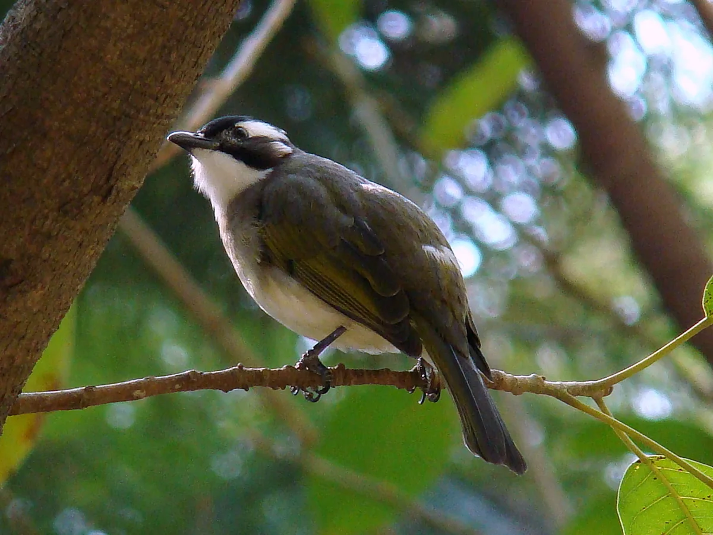

Back to the indexNO. 004 · Songbirds & City Birds / Pycnonotidae · Bulbuls
Light-vented Bulbul
白头鹎 · bái tóu bēi Pycnonotus sinensisThe bird that wakes the cities of the south
A cap of ink-black and a patch of snow behind the eye — two strokes of colour and you have the name. The Light-vented Bulbul is the commonest bird in the Pearl River Delta and the easiest to ignore: the bright, bouncing whistles you hear downstairs are almost certainly this species.
Gallery
One scientific illustration for shape and colour blocks, two field photographs for how it looks in real light. Click any image to enlarge.
Identification
- HeadCrown to nape black; a large white patch from behind the eye to the side of the neck, the trademark 'white head'; often a small white tuft at the rear of the ear-coverts.
- PlumageUpperparts olive-green washed with grey; throat white; breast and belly greyish white; flanks tinged yellow-green. Altogether subdued, like a leaf bleached by sun.
- Bill & eyeBill black, short and pointed; eye dark brown. The sexes are effectively identical in the field.
- Age differencesJuveniles have browner crowns and an incomplete white nape patch, and look duller overall — easily mistaken for other bulbuls.
Behaviour
Lively, forever hopping through the canopy, nodding and flicking its tail, rarely still for long. Pairs in the breeding season, flocks of about ten otherwise, mixing with other bulbuls and white-eyes in autumn and winter. The diet is mixed: insects in spring and summer, berries and nectar in autumn and winter. The deep cup nest sits in a shrub or branch fork, and two broods a year is normal.
Voice
A string of bright, bouncing whistles, typically opening 'ji-chu, jili-gulu', the ending rising or trembling. Repertoires vary — one bird may sing several distinct phrases — and dawn and dusk get the full performance.
Where to find it in Zhuhai
- Yeli Island coastal path
- Xiangshan Lake Park
- Banzhang Hill trails
- Qi'ao Island village lanes